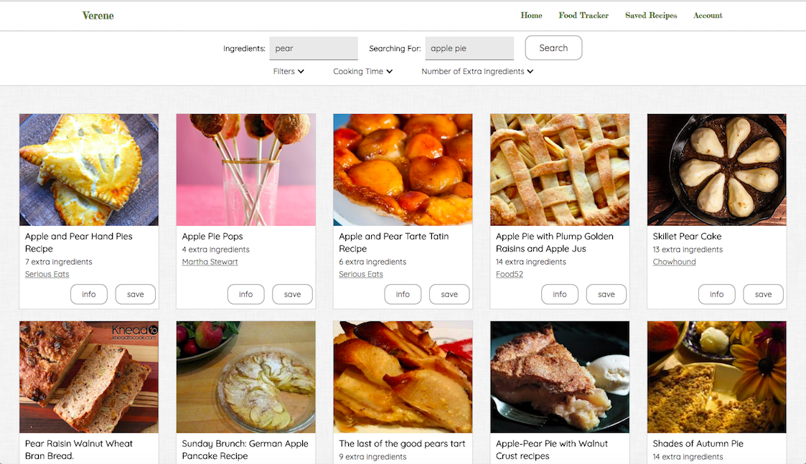
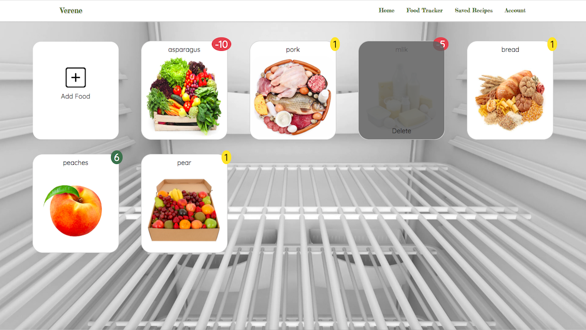

Recipe Finder
Recipe Finder allows you to find recipes based on the food in your fridge, making it easier to waste less food
Features include:
- Filtering based on preferences such as food in fridge and allergens
- Saving recipes on user account as collections
- Sharing collections to friends


Fridge Tracker
Fridge Tracker allows you to easily keep track of food in your fridge so you don't forget items that will expire soon
Features include:
- Displayed like the inside of your fridge with food items displayed visually
- Allows you to add any easily perishable food items
- Has badge notifications of number of days left till expiry date and warns you based on traffic light colours
- Can delete food item once finished or thrown out
About Us
The idea came from two university friends who wanted to reduce the impact of food wastage. Their goal was to reduce the food wasted at home by making it easier to use up leftover food. They believed that everyone can play a part in protecting the earth and it can start easily from home. Hence why the origin of the name Verene meaning protector in German.
Join now for a free service